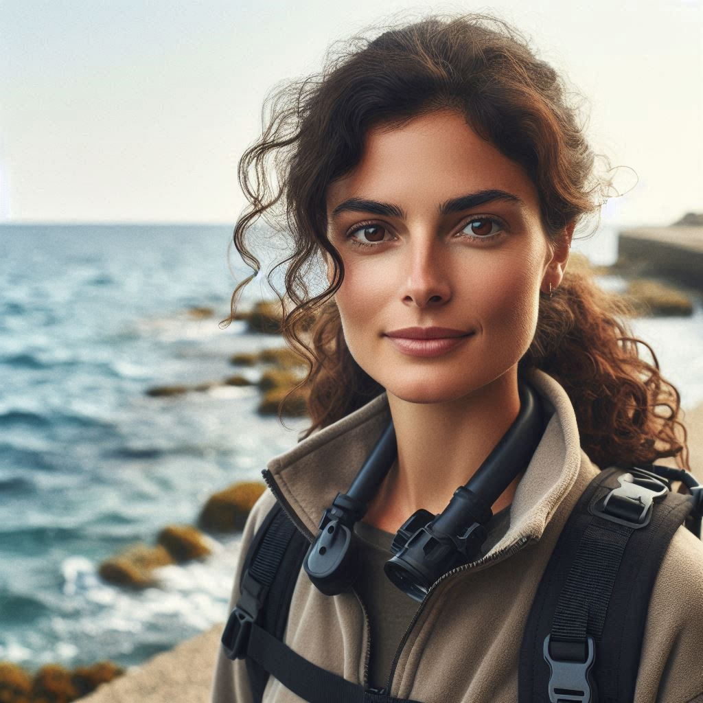
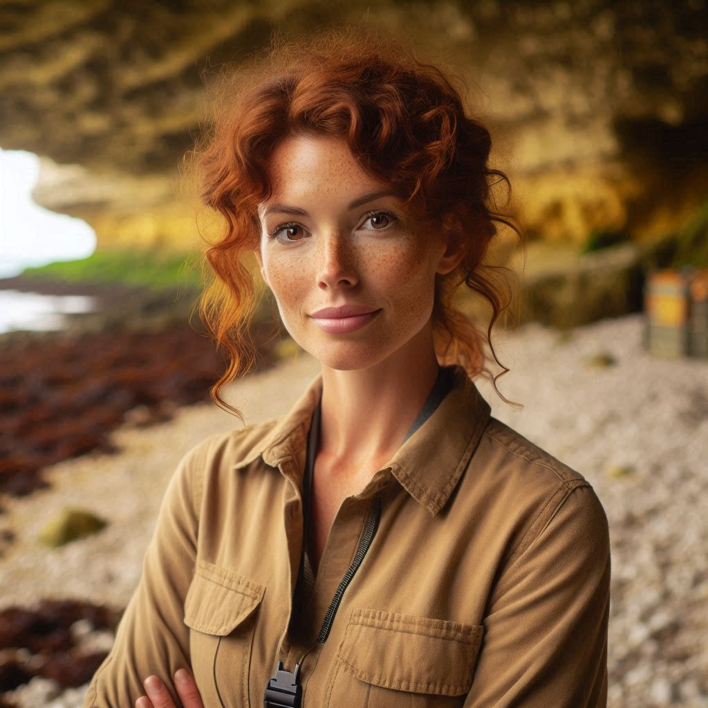
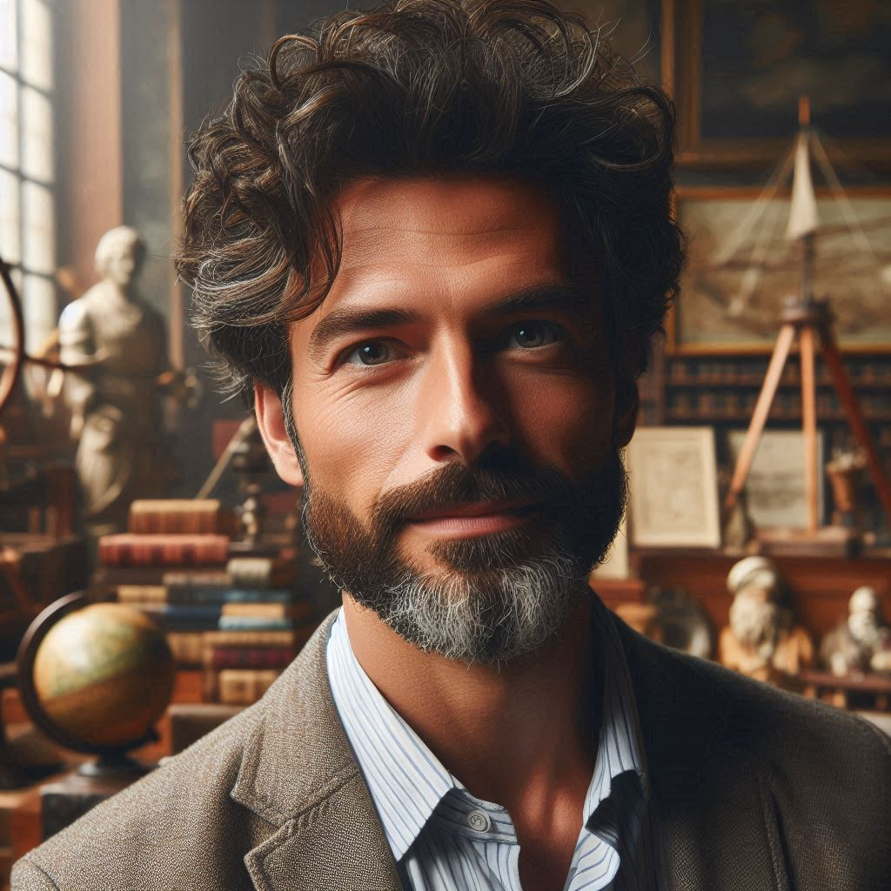

|  |
Dr. Maya CalderonExpertise: Marine Archaeologist specializing in ancient shipwreck artifacts and underwater excavation Bio: Dr. Maya Calderon holds a PhD in Marine Archaeology from the University of Barcelona. She leads underwater expeditions to uncover shipwrecks and submerged settlements along historic trade routes. Skilled in scuba diving, sonar mapping, and artifact preservation, Maya meticulously documents and preserves relics from the ocean floor. She is passionate about educating the public on maritime history and the technologies that reveal the deep sea’s hidden past. At the museum, Maya curates the shipwreck artifacts collection and conducts interactive dive simulation workshops for visitors. Role: Curator of underwater artifacts and educational dive program leader Special Considerations: Certified dive instructor; advocate for ocean conservation and cultural heritage preservation |
Dr. Luna FernandezExpertise: Physical Anthropologist focusing on coastal communities and human interaction with marine environments Bio: Dr. Luna Fernandez earned her doctorate in Physical Anthropology at the University of California, Santa Cruz. Her research investigates ancient coastal populations, their burial customs, and how marine resources shaped their cultures. Luna uses forensic techniques and isotopic analysis to study human remains found near shorelines and underwater caves. She also works closely with local communities to preserve intangible cultural heritage connected to the sea. At the museum, Luna leads outreach programs and develops exhibits on the human stories behind deep-sea discoveries. Role: Manager of human remains collections and community engagement coordinator Special Considerations: Fluent in Spanish and English; committed to ethical research and cultural sensitivity |
 |
|  |
Dr. James O’MalleyExpertise: Cultural Historian specializing in maritime myths, legends, and ritual interpretations Bio: Dr. James O’Malley holds a Master’s in Folklore and Mythology from University College Dublin and a PhD in Cultural History. He explores how seafaring cultures create myths about ocean creatures, weather phenomena, and navigation rituals. James combines traditional scholarship with AI-assisted narrative modeling to create immersive storytelling exhibits. He is known for engaging museum visitors with vivid retellings of mermaid legends, sea monster tales, and sailor superstitions. As the museum’s lead cultural interpreter, James develops educational programs that bridge science and story. Role: Lead cultural interpreter and storytelling program developer Special Considerations: Irish heritage; passionate about preserving maritime oral traditions and inclusivity |